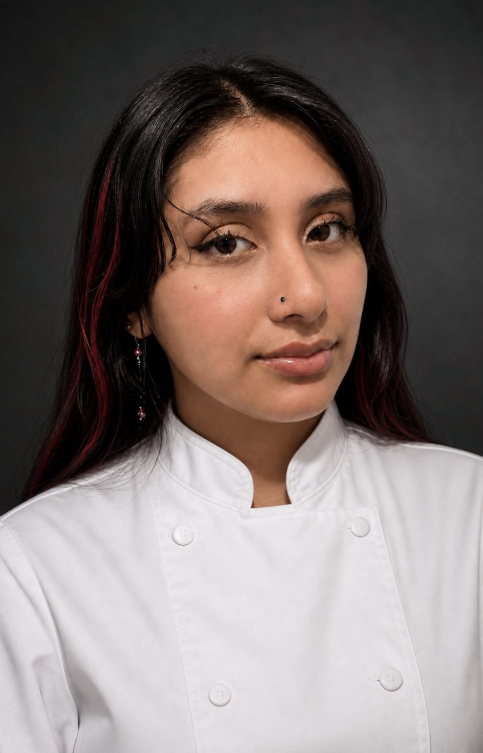

Meet the Baker
I was born in Queens and raised in Newark, and my love for baking started at home with YouTube food videos, curiosity, and a lot of trial and error. I grew up watching creators like Rosanna Pansino, Binging with Babish, and Guy Fieri, and I loved the idea of being able to make something beautiful, fun, and memorable with my own hands.
At first, not everything came out the way I imagined, but every mistake made me want to learn more. When I had the chance to study Culinary Arts in high school, I took it right away. Over those four years, I built my foundation in baking, cooking, service, and presentation, and I eventually started competing in wedding cake decorating, service, and dining competitions.
As I kept growing, I realized that pastry was the perfect place for my creativity. I have always loved painting, decorating cookies, piping details, designing cakes, and finding ways to make desserts feel personal and special. That creative side, mixed with practice and discipline, is what pushed me toward pastry.
After working at Starbucks, where I strengthened my customer service, training, organization, and production skills, I moved into fine dining in New York City. I went on to lead the pastry team at Café Zaffri, where I oversaw pastry production, plated desserts, chocolate work, menu development, ordering, inventory, and team leadership.
Today, I am the Head Pastry Chef at Yellow Rose, where I am leading the opening of a brand-new Yellow Rose Cafe and Bar location. I am creating the entire pastry menu for the space, developing every dessert from concept to plate, refining each recipe, and building the pastry program from the ground up.
I decided to start Bello's Bakery so I could bring all of that experience into my own creative space. I specialize in custom desserts, including laminated pastries, cookies, bonbons, macarons, croissants, breads, and cupcakes, all made with care, detail, and love. For me, baking is more than making something sweet. It is about creating something people remember.
“My dream job is opening my own bakery — Bello's Bakery.”
Career
A pastry professional with experience in high-volume production, dessert development, chocolate work, plated desserts, and pastry team leadership.
Judith's newest role — leading the opening of a new Yellow Rose Cafe and Bar location and creating its entire pastry menu, from concept and plating through production and execution.
Led daily pastry production and a team of four in a high-volume fine-dining kitchen — overseeing plating, service execution, ordering, inventory, and P&L. Developed menu-approved desserts (passion fruit & honey entremet) and artisan bonbons, maintained FIFO and food-safety standards, and built a waste-tracking system later adopted kitchen-wide.
Founder of Bello's Bakery — developing original recipes for laminated pastries, cookies, bonbons, and specialty desserts; building the brand through Instagram and product photography; and managing custom orders from concept through delivery.
Train new hires on beverage preparation, customer service, and daily standards; support inventory, stock rotation, and shift readiness.
Delivered fast, high-quality service across multiple stations during peak hours while maintaining strict hygiene and cleanliness standards.
Supported daily operations and customer service in a management-training role.
Strengths